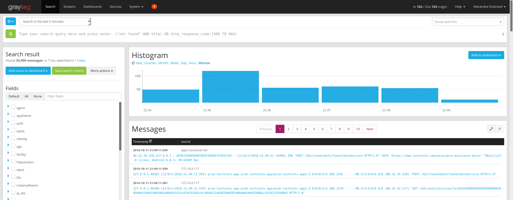
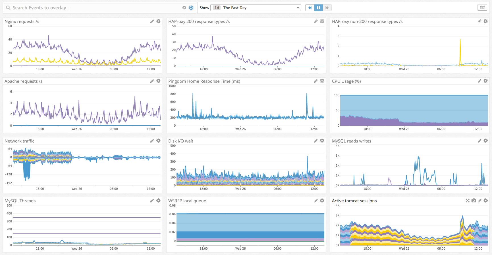
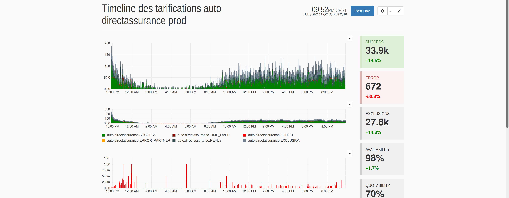
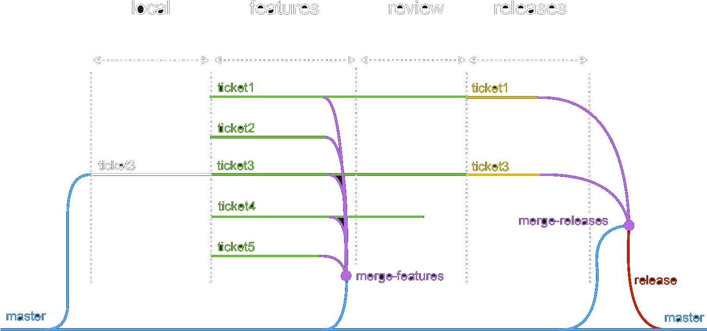

L'équipe IT est constituée de 25 développeurs, intégrés dans 3 features team.
Les développeurs ont des responsabilités devops, telles que la livraison en production, la gestion de la configuration des environnements, le monitoring, etc.
TODO
Gestionnaire de logs : Graylog
Monitoring technique : Datadog
Monitoring fonctionnel : Graphite et Tessera
Monitoring graphique UI : LesFurets Zeno pixel
https://github.com/lesfurets/zeno-pixel
Déploiement blue / green, 0 downtime, avec HAProxy

Provisioning des machines avec Ansible

Tests fonctionnels Selenium
Normalement, nos 200 tests selenium prendraient 6 heures. Avec un grid selenium classique, on arrive à 1 heure
Avec un grid selenium en RAMFS ? 10 minutes
LesFurets selenium grid :
https://github.com/lesfurets/selenium-lxc
http://paulhammant.com/2013/03/13/facebook-tbd-take-2/
Avec une code base en trunk based (option 1), toutes les features sont dans le master, ce qui permet de faire du build automatique et tous les commits sont envoyés en production à chaque release
Nécessite du feature toggling et une forte maturité sur l'infrastructure de test.
La migration vers le continuous delivery est un "big bang"
Avec une code base en feature branching (option 2), chaque feature est sur une branche dédiée, la production est la fusion du master et des features, les développements avancent en isolation, et on livre une branche lorsqu'elle est prête.
On perd l'intégration continue et la gestion des conflits

feature branching : on part d'un master
feature branching : création d'une branche de
développement
features/f1
feature branching : création d'une branche de
développement
features/f2
Merge pre-build : merge de master sur la branche avant le build.
TODO : CI tools providing this
On veut une code base en feature branching (pour sa flexibilité) et on veut faire du continuous delivery (pour sa valeur ajoutée), sans perdre l'intégration continue.
Autrement dit, comment réconcilier feature branching et intégration continue ?
On fait du continuous merge !
Feature branching : historiques indépendants de features/f1
et
features/f2

Continuous merge : merge de features/f1 et
features/f2 avec master
continuous merge : nouveau commit sur
features/f1
continuous merge : fusion automatique
# Fusion plusieurs branches avec pattern
git merge features/*
Mais le merge de plusieurs branches à partir d'un pattern n'existe pas dans git...
LesFurets git-octopus :
https://github.com/lesfurets/git-octopus
En plus de récupérer l'intégration continue, on constitue facilement les environnements :
- dev avec toutes les features
- stage pour la validation
- preprod pour les tickets validés
Différents environnements :
TODO : simplify image
Si la probabilité d'avoir un conflit entre 2 branches est C, Quelle est la probabilité d'avoir au moins un conflit lorsqu'on merge N branches?
Et comment gérer les conflits ?
gestion des conflits

gestion des conflits : une nouvelle branche sauvage
features/new
apparaît

gestion des conflits : git-octopus merge KO
gestion des conflits : git merge simple
master
et features/new OK
gestion des conflits : git merge simple
features/f1 et features/new OK
gestion des conflits : git merge simple
features/f2 et features/new KO
éviter le conflit au niveau du code
DANGER ZONE : safe
éviter les conflits : git-octopus merge KO à cause de features/new
éviter les conflits : modifier le code de features/new
pour éviter le conflit
éviter les conflits : git-octopus merge OK
enlever la branche de l'octopus
DANGER ZONE : safe
sortir de l'octopus : git-octopus merge KO à cause de features/new
sortir de l'octopus : utilisation du pattern de nommage pour sortir la branche
sortir de l'octopus : git-octopus merge OK
fusionner la branche
DANGER ZONE : danger

fusionner la branche : git-octopus merge KO
à cause de features/new
fusionner la branche : fusion de features/f2
et features/new en features/f2_new
fusionner la branche : suppression de
features/f2 et features/new
fusionner la branche : git-octopus merge OK
rebaser la branche
DANGER ZONE : danger

rebaser la branche : git-octopus merge KO à cause de features/new
rebaser la branche : rebase de feature/new
sur
features/f2
rebaser la branche : git-octopus merge OK
git-conflict : résolution de conflit distribué, livré avec git-octopus
DANGER ZONE : warning
git-conflict : git-octopus merge KO
à cause de features/new
git-conflict : dépôt résolution de conflit situé sous
conflict/resolutions
git-conflict : git merge simple features/f2
et
features/new KO
git-conflict : git-octopus regarde s'il y a une résolution de conflit disponible
git-conflict : git-octopus merge OK
1 : éviter les conflits
2 : enlever la branche de l'octopus
3 : utiliser git-conflict
4 : rebaser les branches
5 : fusionner les branches
6 : ...
Code source git-octopus sur github
https://github.com/lesfurets/git-octopus
Forum git-octopus sur Google Groups
https://groups.google.com/forum/#!forum/git-octopus
Page conférences sur github
https://github.com/lesfurets/lesfurets-conferences